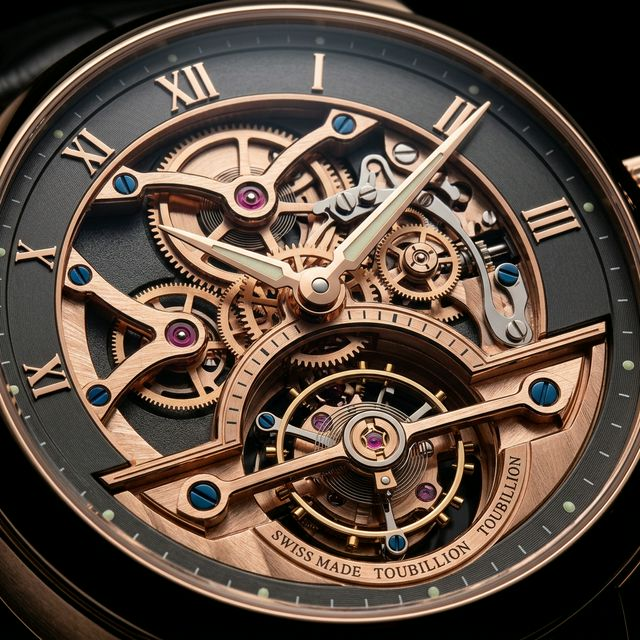

Sourcing & Provenance: Chronometric Mastery
Securing a limited-run Swiss mechanical watch requires leveraging discreet industry relationships. Farruch’s horological division accesses allocations of grand complications and tourbillons directly from Geneva's most private salons.
Each mechanical movement is subjected to extreme logistical care during export. Our vault-to-vault secure routing utilizes bespoke shock-absorbent, pressure-regulated transit cases, preserving the delicate gear train calibrations throughout the journey.
Return to Collection